library(tidyverse)
library(gsheet)
library(tidyr)Ágata
Análise Exploratória do Conjunto
O conjunto AGATA traz a avaliação da eficácia de um fator com 10 níveis. No trabalho em questão, 10 fungicidas foram utilizados.
Carregamento de pacotes com funções gerais:
Analisando o conunto:
agata <- gsheet2tbl("https://docs.google.com/spreadsheets/d/1dinE1t_Bjpj4UQnlSpf3cBFWv76Ijal1/edit#gid=393309176")
# Contruindo Histogramas para visualizar como os dados estão distribuídos:
# Para a Severidade:
agata |>
ggplot(aes(me_sev))+
geom_histogram(bins = 7, fill ="grey")+
theme_bw()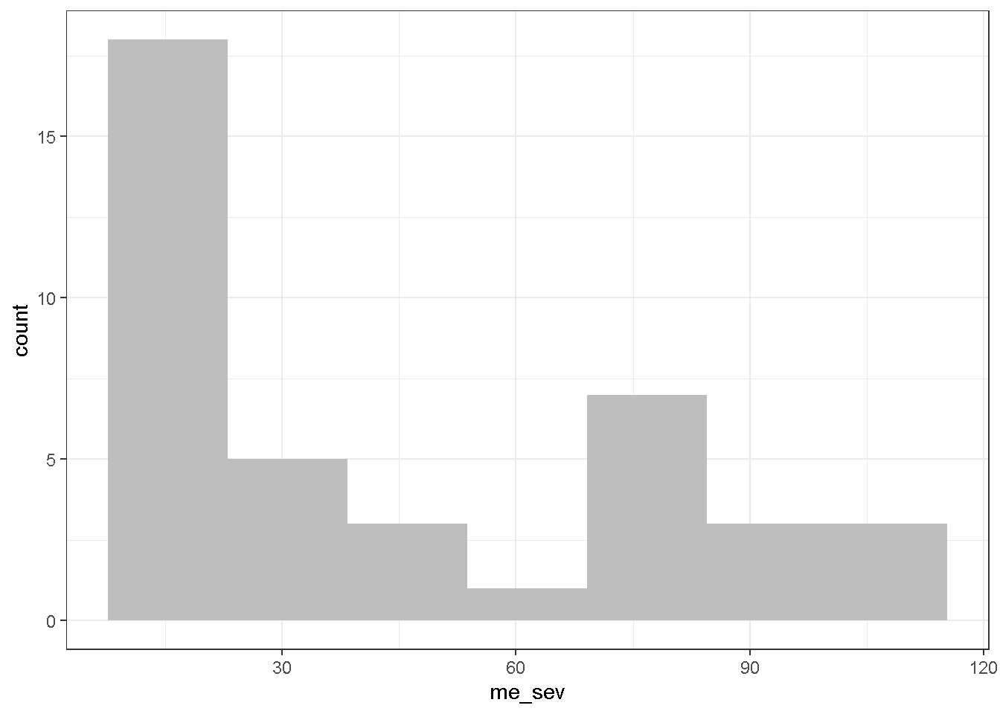
# Para Produção Total em Kg/ha:
agata |>
ggplot(aes(produt))+
geom_histogram(bins = 7, fill = "grey")+
theme_bw()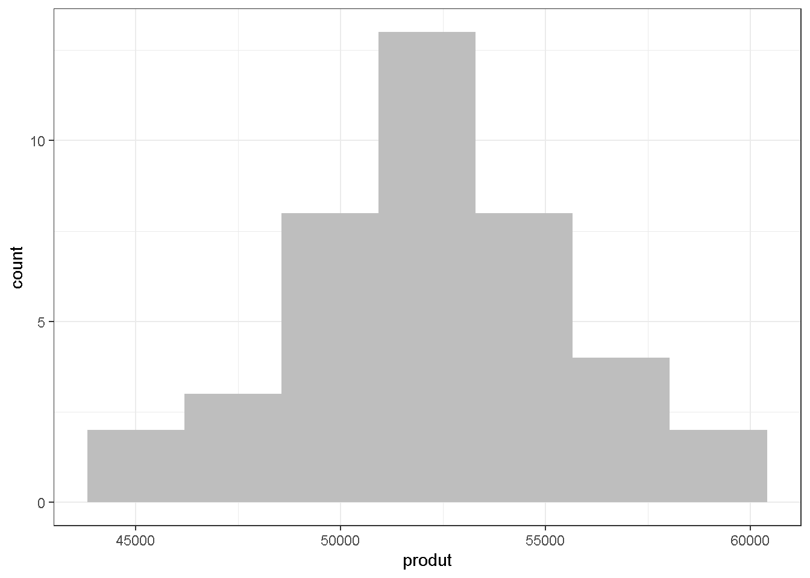
# Para Produtividade em Sacas Por Hectare:
agata |>
ggplot(aes(sc_ha))+
geom_histogram(bins = 7, fill = "grey")+
theme_bw()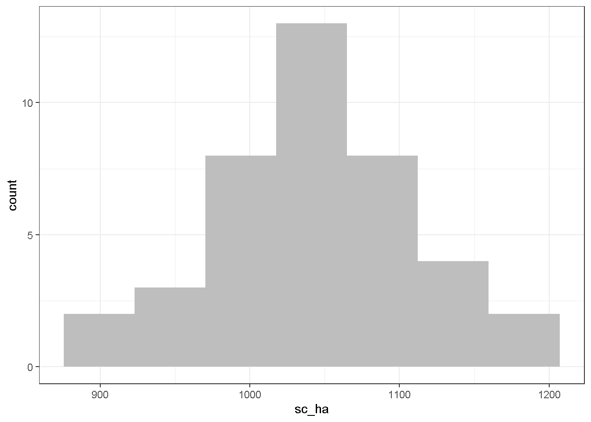
# Para a % Clorofila nas Folhas:
agata |>
ggplot(aes(me_clorofilometro))+
geom_histogram(bins = 7, fill = "grey")+
theme_bw()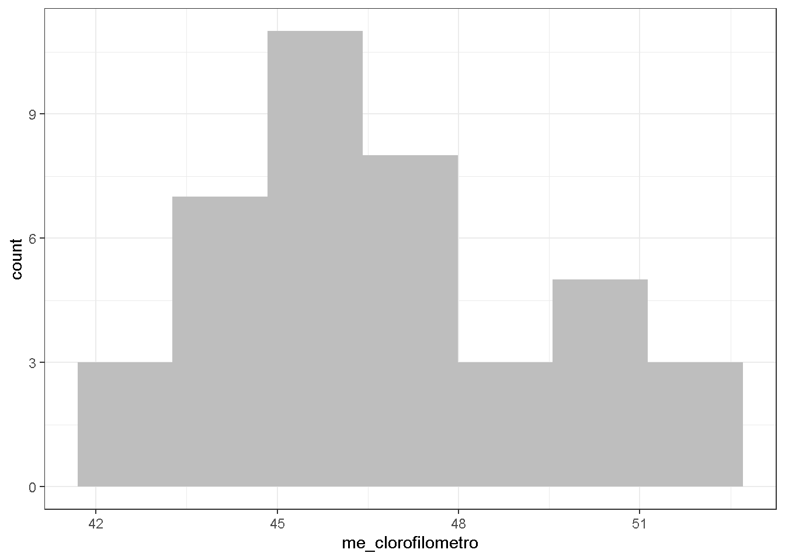
Visualizando em gráficos a relação entre os tratamentos (fator) e as resposta (variáveis de interesse):
# Tratamento influênciando a Severidade:
sev <- agata |>
ggplot(aes(trat, me_sev))+
geom_boxplot()+
theme_minimal()+
theme(axis.text.x = element_text(angle = 45, hjust = 1))+
scale_x_discrete(limits = c("Testemunha", "Miravis Duo", "Miravis", "Orkestra",
"Bion","Trichoderma", "Miravis Duo+Trichoderma",
"Miravis + Trichoderma", "Miravis Duo+ Bion", "Miravis+ Bion"))+
labs(x = "Tratamento")+
labs(y = "Severidade %")+
scale_y_continuous(breaks = seq(0,100, 10), limits = c(0,100))
sev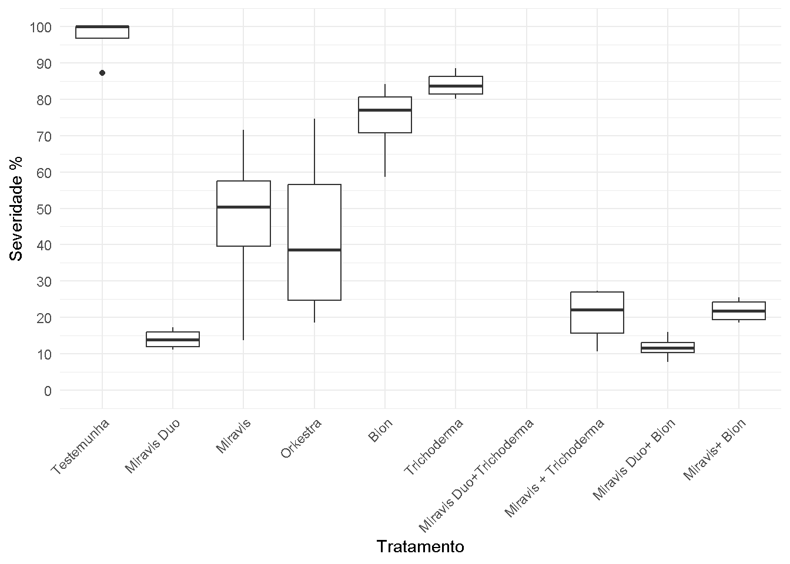
# Tratamento influênciando na Produção Total:
produçao <- agata |>
ggplot(aes(trat, produt))+
geom_boxplot()+
theme_minimal()+
ylim(0, 60000)+
theme(axis.text.x = element_text(angle = 45, hjust = 1))+
scale_x_discrete(limits = c("Testemunha", "Miravis Duo", "Miravis", "Orkestra",
"Bion","Trichoderma", "Miravis Duo+ Trichoderma",
"Miravis + Trichoderma", "Miravis Duo+ Bion", "Miravis+ Bion"))+
labs(x = "Tratamento")+
labs(y = "Produção Total (kg/ha)")+
scale_y_continuous(breaks = seq(40000, 60000, 2000), limits = c(40000,60000))
produçao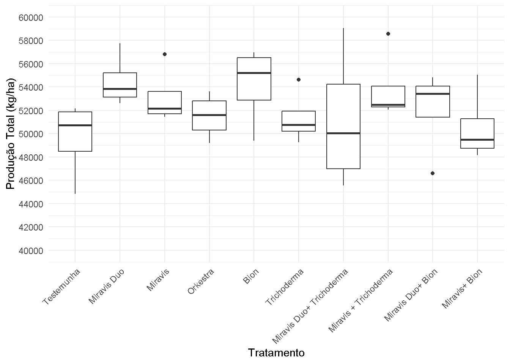
# Tratamento influênciando na Produtividade (Sacas por Hectare):
produtividade <- agata |>
ggplot(aes(trat, sc_ha))+
geom_boxplot()+
ylim(0, 2000)+
theme_minimal()+
theme(axis.text.x = element_text(angle = 45, hjust = 1))+
scale_x_discrete(limits = c("Testemunha", "Miravis Duo", "Miravis", "Orkestra",
"Bion","Trichoderma", "Miravis Duo+ Trichoderma",
"Miravis + Trichoderma", "Miravis Duo+ Bion", "Miravis+ Bion"))+
labs(x = "Tratamento")+
labs(y = "Produtividade (Sacas/Hectare)")
produtividade
# Tratamento influênciando na % de Clorofila:
cloro <- agata |>
ggplot(aes(trat, me_clorofilometro))+
geom_boxplot()+
ylim(0, 100)+
theme_minimal()+
theme(axis.text.x = element_text(angle = 45, hjust = 1))+
scale_x_discrete(limits = c("Testemunha", "Miravis Duo", "Miravis", "Orkestra",
"Bion","Trichoderma", "Miravis Duo+ Trichoderma",
"Miravis + Trichoderma", "Miravis Duo+ Bion", "Miravis+ Bion"))+
labs(x = "Tratamento")+
labs(y = "Clorofila %")
cloro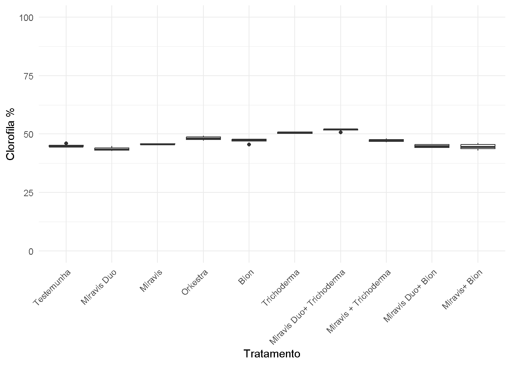
Realizando análise de correlação entre as variáveis resposta:
# Selencionando somente as variáveis repostas:
agata2 = agata |>
dplyr::select(me_sev, produt, sc_ha, me_clorofilometro)
# Selecionando as colunas de 1 a 4 do data (agata2) e calculando a matriz de correlação de Spearman para essas colunas:
coRes <- cor(agata2 |> dplyr::select(1:4), method = "spearman")
# Criando um gráfico de correlação:
library(corrplot)
corrplot(coRes, method = 'number', type = "lower")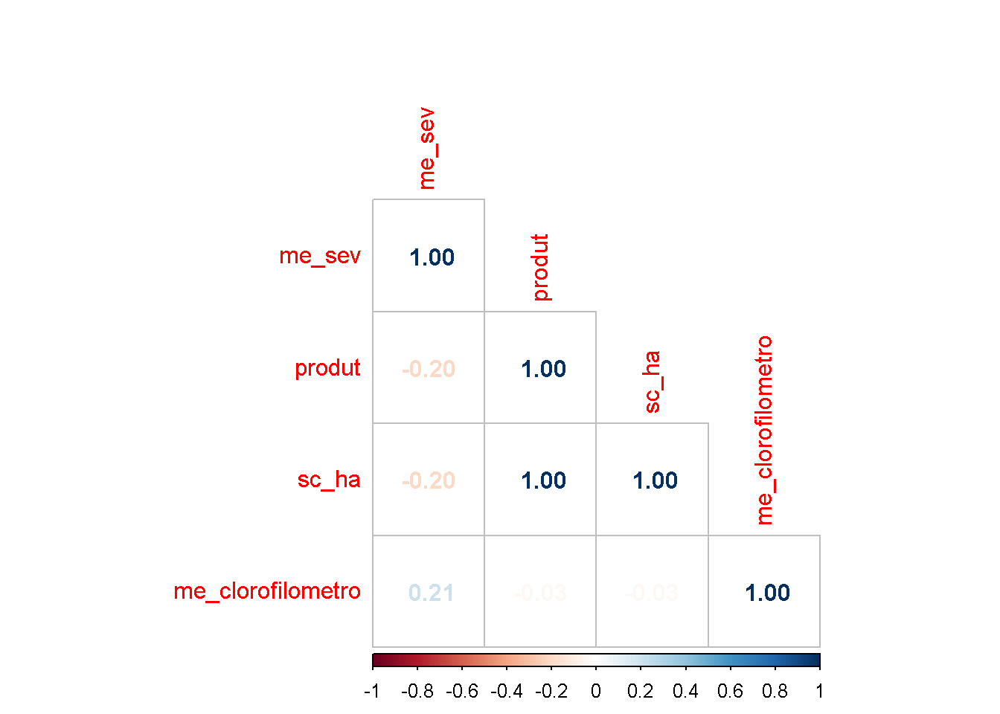
Ajustando o modelo de ANOVA para Severidade:
# Criando uma nova coluna em agata (Bloco = bloc). Neste caso estamos transformandoa variável b1 em 1:
agata = agata |> mutate(bloc = case_when(
bloco == "b1" ~ 1,
bloco == "b2" ~ 2,
bloco == "b3" ~ 3,
bloco == "b4" ~ 4))
# Trasnformando bloc e trat em fator:
agata$bloc = as.factor(agata$bloc)
agata$trat = as.factor(agata$trat)
# Como temos um conjunto de dados com apenas um fator e 10 níveis desse fator, uma abordagem comum é utilizar um modelo de regressão linear múltipla ou um modelo de análise de variância (ANOVA):
# Para Severidade
aov_sev= aov(me_sev ~ trat + bloc, data = agata)
summary(aov_sev) Df Sum Sq Mean Sq F value Pr(>F)
trat 9 36001 4000 29.726 9.47e-12 ***
bloc 3 911 304 2.258 0.104
Residuals 27 3633 135
---
Signif. codes: 0 '***' 0.001 '**' 0.01 '*' 0.05 '.' 0.1 ' ' 1# Checando as Premissas:
library(performance)
check_normality(aov_sev)Warning: Non-normality of residuals detected (p = 0.007).check_heteroscedasticity(aov_sev)OK: Error variance appears to be homoscedastic (p = 0.693).# Inicialmente, apenas a premissa de heterocedasticidade foi atendida.
# Criaremos uma nova coluna transformada com o log + 0.5:
agata$log_me_sev <- log(agata$me_sev + 0.5)
# Ajustar o modelo ANOVA usando a coluna transformada:
aov_sev <- aov(log_me_sev ~ trat + bloc, data = agata)
# Checando novamente as premissas:
check_normality(aov_sev)OK: residuals appear as normally distributed (p = 0.912).check_heteroscedasticity(aov_sev)OK: Error variance appears to be homoscedastic (p = 0.721).# Usaremos o pacote **emmeans** para calcular as médias estimadas dos níveis do fator **trat** a partir do modelo ANOVA ajustado **aov_sev**:
library(emmeans)
aov2_means <- emmeans(aov_sev, ~ trat, type = "response")
aov2_means trat emmean SE df lower.CL upper.CL
Bion 4.31 0.165 27 3.97 4.64
Miravis 3.70 0.165 27 3.36 4.04
Miravis + Trichoderma 2.98 0.165 27 2.64 3.32
Miravis Duo 2.67 0.165 27 2.33 3.00
Miravis Duo+ Bion 2.48 0.165 27 2.14 2.82
Miravis Duo+ Trichoderma 2.84 0.165 27 2.50 3.18
Miravis+ Bion 3.10 0.165 27 2.76 3.44
Orkestra 3.63 0.165 27 3.29 3.96
Testemunha 4.58 0.165 27 4.24 4.91
Trichoderma 4.44 0.165 27 4.10 4.77
Results are averaged over the levels of: bloc
Confidence level used: 0.95 #Para realizar, compara e exibir os resultados dos teste de comparações mútiplas,utilzaremos os pacotes **multicompView** e **multicomp**:
library(multcompView)
library(multcomp)
cld(aov2_means) trat emmean SE df lower.CL upper.CL .group
Miravis Duo+ Bion 2.48 0.165 27 2.14 2.82 1
Miravis Duo 2.67 0.165 27 2.33 3.00 1
Miravis Duo+ Trichoderma 2.84 0.165 27 2.50 3.18 12
Miravis + Trichoderma 2.98 0.165 27 2.64 3.32 123
Miravis+ Bion 3.10 0.165 27 2.76 3.44 123
Orkestra 3.63 0.165 27 3.29 3.96 234
Miravis 3.70 0.165 27 3.36 4.04 345
Bion 4.31 0.165 27 3.97 4.64 456
Trichoderma 4.44 0.165 27 4.10 4.77 56
Testemunha 4.58 0.165 27 4.24 4.91 6
Results are averaged over the levels of: bloc
Confidence level used: 0.95
P value adjustment: tukey method for comparing a family of 10 estimates
significance level used: alpha = 0.05
NOTE: If two or more means share the same grouping symbol,
then we cannot show them to be different.
But we also did not show them to be the same. # Os resultados avaliados desse método, apesar de corretos, dificultariam a visualização e interpretação dos mesmos. Por ter criado grupos de 1 a 6, dificultando assim a visualização em gráficos, utilizaremos outra metodologia para agruparmos os resultados.
# Utilizaremos a função dic do pacote library(ExpDes.pt) para visualizarmos as comparações:
library(ExpDes.pt)
#Utilizamos o mcomp = "ccboot" para controlarmos o erro global de comparações em teste de comparações múltiplas.
tab <- dic(agata$trat, agata$me_sev, mcomp = "ccboot")------------------------------------------------------------------------
Quadro da analise de variancia
------------------------------------------------------------------------
GL SQ QM Fc Pr>Fc
Tratamento 9 36001 4000.1 26.405 6.8461e-12
Residuo 30 4545 151.5
Total 39 40545
------------------------------------------------------------------------
CV = 28.64 %
------------------------------------------------------------------------
Teste de normalidade dos residuos ( Shapiro-Wilk )
Valor-p: 0.0006975914
ATENCAO: a 5% de significancia, os residuos nao podem ser considerados normais!
------------------------------------------------------------------------
------------------------------------------------------------------------
Teste de homogeneidade de variancia
valor-p: 0.1096944
De acordo com o teste de bartlett a 5% de significancia, as variancias podem ser consideradas homogeneas.
------------------------------------------------------------------------
Teste de Comparacoes multiplas Bootstrap
------------------------------------------------------------------------
Grupos Tratamentos Medias
1 a Testemunha 96.8250
2 a Trichoderma 84.0375
3 a Bion 74.2875
4 b Miravis 46.5875
5 b Orkestra 42.6125
6 c Miravis+ Bion 21.8750
7 c Miravis + Trichoderma 20.4875
8 c Miravis Duo+ Trichoderma 17.2500
9 c Miravis Duo 14.0875
10 c Miravis Duo+ Bion 11.7750
------------------------------------------------------------------------
Obs.: O metodo de comparacoes multiplas bootstrap pode ter resultados diferentes
a cada rodada por depender de simulacoes
------------------------------------------------------------------------str(agata)tibble [40 × 10] (S3: tbl_df/tbl/data.frame)
$ trat : Factor w/ 10 levels "Bion","Miravis",..: 9 4 2 8 1 10 6 3 5 7 ...
$ me_sev : num [1:40] 100 12.3 48.2 74.6 79.5 ...
$ peso_total : num [1:40] 59.2 69.5 69.4 69.3 65.2 ...
$ produt : num [1:40] 44841 52621 52545 52515 49386 ...
$ sc_ha : num [1:40] 897 1052 1051 1050 988 ...
$ me_clorofilometro: num [1:40] 44.9 44.8 45.6 49.3 45.6 ...
$ peso_caixa : num [1:40] 21.4 18.2 16.7 18.6 17.9 ...
$ bloco : chr [1:40] "b1" "b1" "b1" "b1" ...
$ bloc : Factor w/ 4 levels "1","2","3","4": 1 1 1 1 1 1 1 1 1 1 ...
$ log_me_sev : num [1:40] 4.61 2.55 3.89 4.32 4.38 ...# Criando grupos apartir da análise "ccboot":
agata <- agata |>
mutate(grupo = case_when(
trat %in% c("Testemunha", "Trichoderma", "Bion") ~ "Grupo A",
trat %in% c("Orkestra", "Miravis") ~ "Grupo B",
trat %in% c("Miravis+ Bion", "Miravis Duo+ Trichoderma", "Miravis + Trichoderma", 'Miravis Duo', 'Miravis Duo+ Bion' ) ~ "Grupo C"))
# Gráfico boxplot do tratamento sobre a resposta severidade, preenchidos por grupos e tratamentos:
ggplot(agata, aes(trat, me_sev, fill = grupo)) +
geom_boxplot() +
theme_bw() +
theme(axis.text.x = element_text(angle = 45, hjust = 1)) +
scale_x_discrete(limits = c("Testemunha", "Miravis Duo", "Miravis", "Orkestra",
"Bion", "Trichoderma", "Miravis Duo+ Trichoderma",
"Miravis + Trichoderma", "Miravis Duo+ Bion", "Miravis+ Bion")) +
labs(x = "Tratamento") +
labs(y = "Severidade (%)") +
scale_y_continuous(breaks = seq(0, 100, 10), limits = c(0, 100)) +
scale_fill_manual(values = c("Grupo A" = "#00C19A", "Grupo B" = "steelblue", "Grupo C" = "#E68613"), name = "Grupo de Tratamento")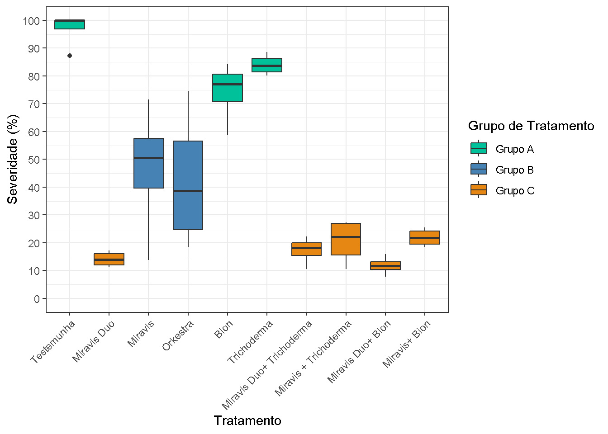
Acerca do resultado acima: Aplicação em análises comparativas: Tanto o “ccboot” quanto o “sk” são utilizados em análises comparativas entre grupos ou fatores, permitindo a identificação de diferenças significativas entre eles.
A vantagem do “ccboot” está na sua capacidade de controlar o erro do tipo I (fALSO POSITIVO) em comparações múltiplas por meio do bootstrap e correção de Bonferroni. Isso é especialmente relevante quando há um grande número de comparações a serem realizadas, reduzindo a chance de falsos positivos.
Ajustando um modelo de ANOVA para Produção:
aov_produt <- aov(produt ~ trat + bloc, data = agata)
summary(aov_produt) Df Sum Sq Mean Sq F value Pr(>F)
trat 9 98928595 10992066 0.986 0.474
bloc 3 39285965 13095322 1.175 0.338
Residuals 27 300993427 11147905 library(performance)
check_normality(aov_produt)OK: residuals appear as normally distributed (p = 0.790).check_heteroscedasticity(aov_produt)OK: Error variance appears to be homoscedastic (p = 0.464).aov2_means <- emmeans(aov_produt, ~trat,
type = "response")
aov2_means trat emmean SE df lower.CL upper.CL
Bion 54187 1669 27 50762 57613
Miravis 53142 1669 27 49717 56567
Miravis + Trichoderma 53898 1669 27 50472 57323
Miravis Duo 54511 1669 27 51086 57937
Miravis Duo+ Bion 52061 1669 27 48635 55486
Miravis Duo+ Trichoderma 51178 1669 27 47753 54604
Miravis+ Bion 50546 1669 27 47120 53971
Orkestra 51506 1669 27 48080 54931
Testemunha 49616 1669 27 46190 53041
Trichoderma 51358 1669 27 47933 54783
Results are averaged over the levels of: bloc
Confidence level used: 0.95 cld(aov2_means) trat emmean SE df lower.CL upper.CL .group
Testemunha 49616 1669 27 46190 53041 1
Miravis+ Bion 50546 1669 27 47120 53971 1
Miravis Duo+ Trichoderma 51178 1669 27 47753 54604 1
Trichoderma 51358 1669 27 47933 54783 1
Orkestra 51506 1669 27 48080 54931 1
Miravis Duo+ Bion 52061 1669 27 48635 55486 1
Miravis 53142 1669 27 49717 56567 1
Miravis + Trichoderma 53898 1669 27 50472 57323 1
Bion 54187 1669 27 50762 57613 1
Miravis Duo 54511 1669 27 51086 57937 1
Results are averaged over the levels of: bloc
Confidence level used: 0.95
P value adjustment: tukey method for comparing a family of 10 estimates
significance level used: alpha = 0.05
NOTE: If two or more means share the same grouping symbol,
then we cannot show them to be different.
But we also did not show them to be the same. produçaoAjustando um modelo de ANOVA para Produtividade:
aov_produtividade <- aov(sc_ha ~ trat + bloc, data = agata)
summary(aov_produtividade) Df Sum Sq Mean Sq F value Pr(>F)
trat 9 39576 4397 0.989 0.472
bloc 3 15735 5245 1.179 0.336
Residuals 27 120096 4448 library(performance)
check_normality(aov_produtividade)OK: residuals appear as normally distributed (p = 0.792).check_heteroscedasticity(aov_produtividade)OK: Error variance appears to be homoscedastic (p = 0.462).aov3_means <- emmeans(aov_produtividade, ~trat,
type = "response")
aov3_means trat emmean SE df lower.CL upper.CL
Bion 1084 33.3 27 1015 1152
Miravis 1063 33.3 27 995 1131
Miravis + Trichoderma 1078 33.3 27 1010 1146
Miravis Duo 1090 33.3 27 1022 1158
Miravis Duo+ Bion 1041 33.3 27 973 1110
Miravis Duo+ Trichoderma 1024 33.3 27 955 1092
Miravis+ Bion 1011 33.3 27 942 1079
Orkestra 1030 33.3 27 962 1099
Testemunha 992 33.3 27 924 1061
Trichoderma 1027 33.3 27 959 1096
Results are averaged over the levels of: bloc
Confidence level used: 0.95 cld(aov3_means) trat emmean SE df lower.CL upper.CL .group
Testemunha 992 33.3 27 924 1061 1
Miravis+ Bion 1011 33.3 27 942 1079 1
Miravis Duo+ Trichoderma 1024 33.3 27 955 1092 1
Trichoderma 1027 33.3 27 959 1096 1
Orkestra 1030 33.3 27 962 1099 1
Miravis Duo+ Bion 1041 33.3 27 973 1110 1
Miravis 1063 33.3 27 995 1131 1
Miravis + Trichoderma 1078 33.3 27 1010 1146 1
Bion 1084 33.3 27 1015 1152 1
Miravis Duo 1090 33.3 27 1022 1158 1
Results are averaged over the levels of: bloc
Confidence level used: 0.95
P value adjustment: tukey method for comparing a family of 10 estimates
significance level used: alpha = 0.05
NOTE: If two or more means share the same grouping symbol,
then we cannot show them to be different.
But we also did not show them to be the same. produtividade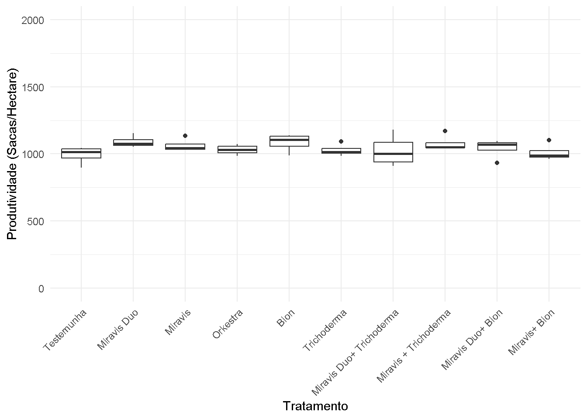
Ajustando um modelo de ANOVA para % Clorofila:
aov_cloro= aov(me_clorofilometro ~ trat + bloc, data = agata)
summary(aov_cloro) Df Sum Sq Mean Sq F value Pr(>F)
trat 9 256.69 28.521 37.240 6.18e-13 ***
bloc 3 1.13 0.378 0.493 0.69
Residuals 27 20.68 0.766
---
Signif. codes: 0 '***' 0.001 '**' 0.01 '*' 0.05 '.' 0.1 ' ' 1# Checando as Premissas:
library(performance)
check_normality(aov_cloro)OK: residuals appear as normally distributed (p = 0.783).check_heteroscedasticity(aov_cloro)OK: Error variance appears to be homoscedastic (p = 0.057).library(emmeans)
aov4_means <- emmeans(aov_cloro, ~ trat, type = "response")
aov4_means trat emmean SE df lower.CL upper.CL
Bion 47.1 0.438 27 46.2 48.0
Miravis 45.8 0.438 27 44.9 46.7
Miravis + Trichoderma 47.2 0.438 27 46.3 48.1
Miravis Duo 43.6 0.438 27 42.7 44.5
Miravis Duo+ Bion 44.9 0.438 27 44.0 45.7
Miravis Duo+ Trichoderma 51.7 0.438 27 50.8 52.6
Miravis+ Bion 44.6 0.438 27 43.7 45.5
Orkestra 48.2 0.438 27 47.3 49.1
Testemunha 45.1 0.438 27 44.2 46.0
Trichoderma 50.6 0.438 27 49.7 51.5
Results are averaged over the levels of: bloc
Confidence level used: 0.95 #Para realizar, compara e exibir os resultados dos teste de comparações mútiplas,utilzaremos os pacotes **multicompView** e **multicomp**:
library(multcompView)
library(multcomp)
cld(aov4_means) trat emmean SE df lower.CL upper.CL .group
Miravis Duo 43.6 0.438 27 42.7 44.5 1
Miravis+ Bion 44.6 0.438 27 43.7 45.5 12
Miravis Duo+ Bion 44.9 0.438 27 44.0 45.7 12
Testemunha 45.1 0.438 27 44.2 46.0 123
Miravis 45.8 0.438 27 44.9 46.7 234
Bion 47.1 0.438 27 46.2 48.0 345
Miravis + Trichoderma 47.2 0.438 27 46.3 48.1 45
Orkestra 48.2 0.438 27 47.3 49.1 5
Trichoderma 50.6 0.438 27 49.7 51.5 6
Miravis Duo+ Trichoderma 51.7 0.438 27 50.8 52.6 6
Results are averaged over the levels of: bloc
Confidence level used: 0.95
P value adjustment: tukey method for comparing a family of 10 estimates
significance level used: alpha = 0.05
NOTE: If two or more means share the same grouping symbol,
then we cannot show them to be different.
But we also did not show them to be the same. library(ExpDes.pt)
#Utilizamos o mcomp = "ccboot" para controlarmos o erro global de comparações em teste de comparações múltiplas.
tab5 <- dic(agata$trat, agata$me_clorofilometro, mcomp = "ccboot")------------------------------------------------------------------------
Quadro da analise de variancia
------------------------------------------------------------------------
GL SQ QM Fc Pr>Fc
Tratamento 9 256.692 28.5213 39.228 3.571e-14
Residuo 30 21.812 0.7271
Total 39 278.504
------------------------------------------------------------------------
CV = 1.82 %
------------------------------------------------------------------------
Teste de normalidade dos residuos ( Shapiro-Wilk )
Valor-p: 0.9939908
De acordo com o teste de Shapiro-Wilk a 5% de significancia, os residuos podem ser considerados normais.
------------------------------------------------------------------------
------------------------------------------------------------------------
Teste de homogeneidade de variancia
valor-p: 0.7666394
De acordo com o teste de bartlett a 5% de significancia, as variancias podem ser consideradas homogeneas.
------------------------------------------------------------------------
Teste de Comparacoes multiplas Bootstrap
------------------------------------------------------------------------
Grupos Tratamentos Medias
1 a Miravis Duo+ Trichoderma 51.735
2 a Trichoderma 50.610
3 b Orkestra 48.170
4 b Miravis + Trichoderma 47.200
5 b Bion 47.105
6 c Miravis 45.785
7 c Testemunha 45.055
8 c Miravis Duo+ Bion 44.850
9 c Miravis+ Bion 44.585
10 d Miravis Duo 43.570
------------------------------------------------------------------------
Obs.: O metodo de comparacoes multiplas bootstrap pode ter resultados diferentes
a cada rodada por depender de simulacoes
------------------------------------------------------------------------# Criando grupos apartir da análise "ccboot":
agata <- agata |>
mutate(grupo = case_when(
trat %in% c("Miravis Duo+ Trichoderma", "Trichoderma") ~ "Grupo A",
trat %in% c("Orkestra", "Miravis + Trichoderma", "Bion") ~ "Grupo B",
trat %in% c("Miravis", "Testemunha", "Miravis Duo+ Bion", "Miravis+ Bion" ) ~ "Grupo C",
trat %in% c("Miravis Duo") ~ "Grupo D"))
# Gráfico boxplot do tratamento sobre a resposta severidade, preenchidos por grupos e tratamentos:
ggplot(agata, aes(trat, me_clorofilometro, fill = grupo)) +
geom_boxplot() +
theme_bw() +
theme(axis.text.x = element_text(angle = 45, hjust = 1)) +
scale_x_discrete(limits = c("Testemunha", "Miravis Duo", "Miravis", "Orkestra",
"Bion", "Trichoderma", "Miravis Duo+ Trichoderma",
"Miravis + Trichoderma", "Miravis Duo+ Bion", "Miravis+ Bion")) +
labs(x = "Tratamento") +
labs(y = "Clorofila %") +
scale_y_continuous(breaks = seq(0, 100, 10), limits = c(40, 55)) +
scale_fill_manual(values = c("Grupo A" = "#00C19A", "Grupo B" = "steelblue", "Grupo C" = "#E68613", name = "Grupo de Tratamento", "Grupo D" = "yellow"))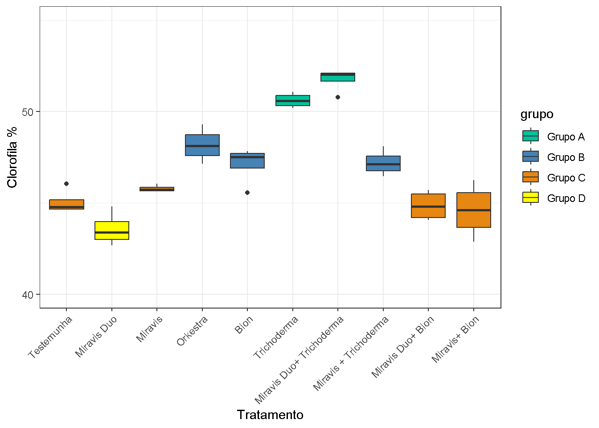